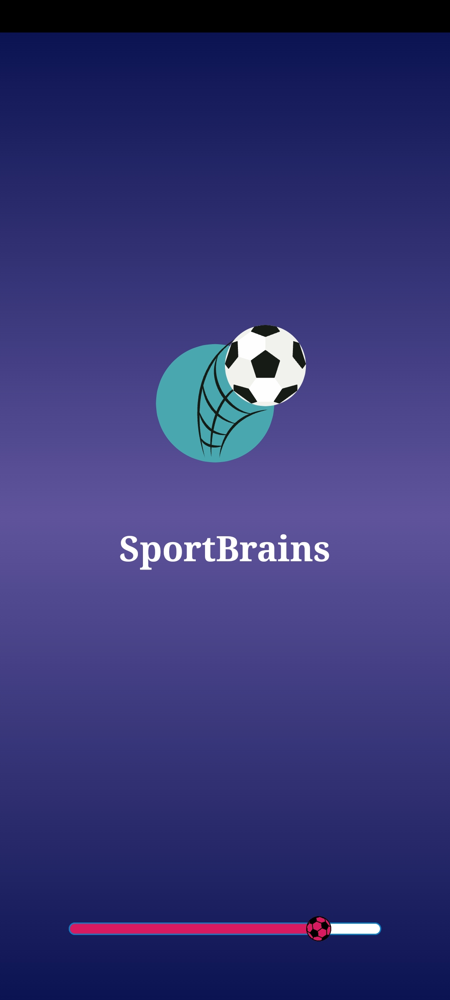
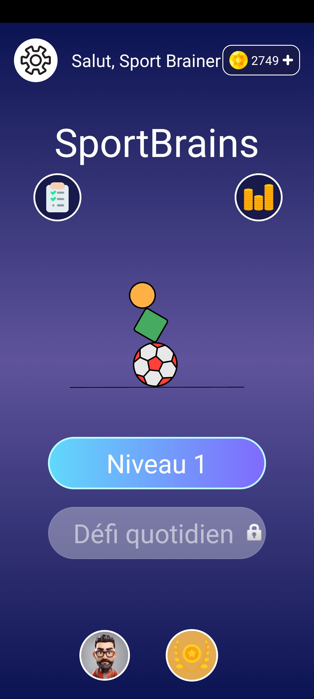
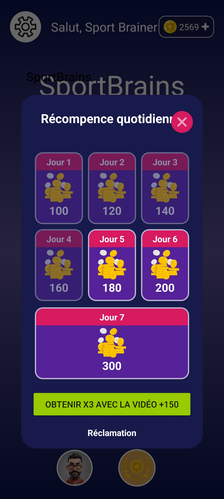
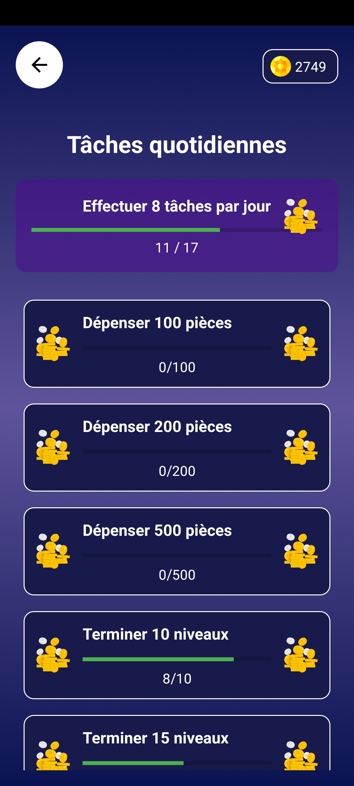
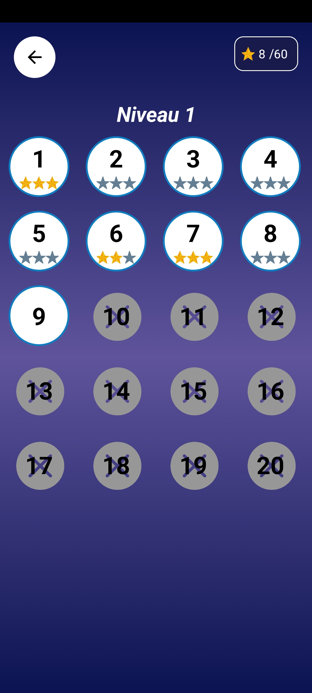
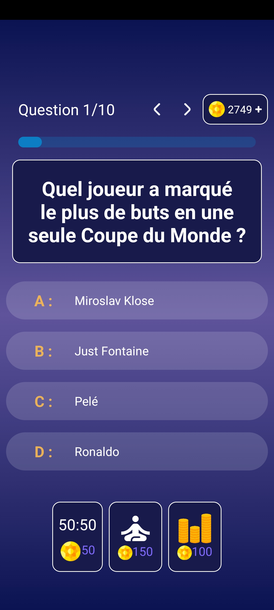

SportBrain

Presentation
Vous pouvez télécharger votre propre image ou faire glisser une image vers la zone d'image pour générer une palette de couleurs. Vous pouvez également choisir une image aléatoire. (Ajoutez ici le texte complet si besoin)

Outils
Vous pouvez télécharger votre propre image ou faire glisser une image vers la zone d'image pour générer une palette de couleurs. Vous pouvez également choisir une image aléatoire. (Ajoutez ici le texte complet si besoin)
Interfaces principaux




Votre avis
Vous pouvez télécharger votre propre image ou faire glisser une image vers la zone d'image pour générer une palette de couleurs. Vous pouvez également choisir une image aléatoire. (Ajoutez ici le texte complet si besoin)
Envoyer Votre avis